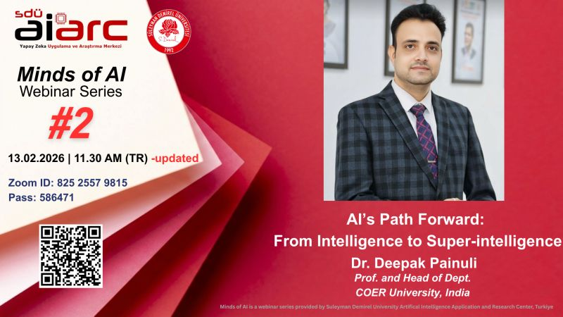
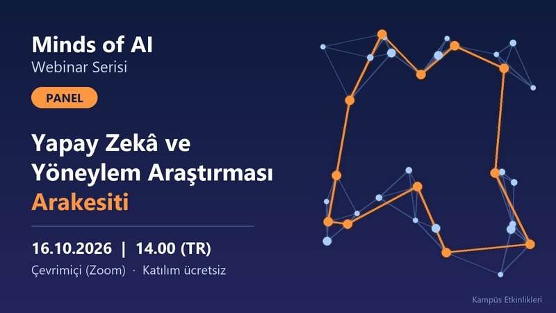

Kampüs Etkinlikleri, SDÜ Yapay Zekâ Uygulama ve Araştırma Merkezi'nin (AIARC) düzenlediği "Minds of AI" webinar serisi başta olmak üzere kampüsteki etkinlikleri tek yerden takip edebileceğiniz basit bir duyuru sayfasıdır.
Yaklaşan Etkinlikler
AI’s Path Forward: From Intelligence to Super-intelligence

Kategori: Webinar
Tarih:
Yer: Çevrimiçi (Zoom)
AIARC'ın "Minds of AI" webinar serisinin 2. oturumunda Dr. Deepak Painuli, yapay zekânın süper zekâya uzanan yolunu anlatıyor.
Detayları görYapay Zekâ ve Yöneylem Araştırması Arakesiti

Kategori: Panel
Tarih:
Yer: Çevrimiçi (Zoom)
AIARC'ın "Minds of AI" serisi kapsamında yapay zekâ ile yöneylem araştırmasının kesişimini konu alan panel oturumu.
Detayları gör